No dia 22 de outubro de 2026 eu visitei o Olin College of Engineering, em Needham, Massachusetts. O campus faz divisa com o Babson College, uma escola de negócios e administração, e os dois ficam a oeste de Boston. Fui porque o Olin aparece em toda conversa sobre ensino de engenharia por projeto, e eu queria ver no chão o que isso significa. Saí com a impressão de que o que sustenta o lugar não é a grade curricular. É a quantidade de decisão que os alunos tomam sozinhos.
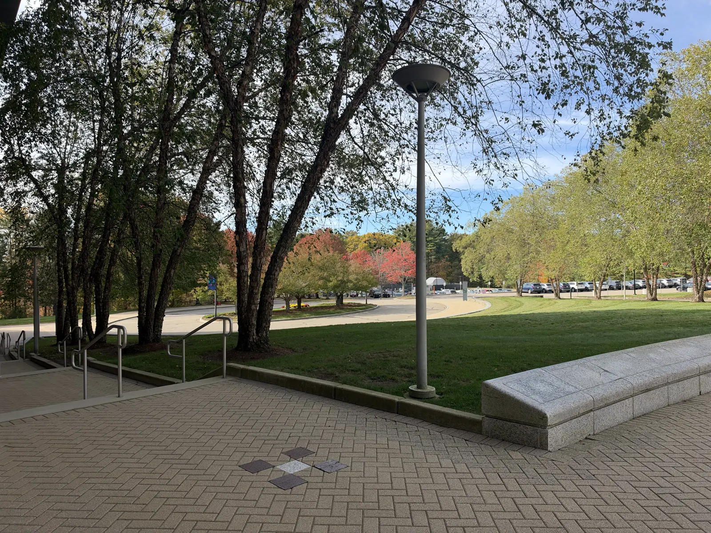
A biblioteca não precisa ser silenciosa
A primeira parada foi a biblioteca, e ela não se comporta como uma. As mesas são feitas para desenhar em cima, com quadro branco e canetão espalhados pelo salão. Os móveis têm rodinha, os estofados convidam a sentar torto e um mural de pôsteres anuncia o que a comunidade está fazendo na semana. Quem precisa de silêncio entra numa das quiet rooms.
Isso muda o que a biblioteca é. Em vez de um depósito de livros com regra de silêncio, ela vira o lugar onde as pessoas se encontram para resolver coisa junto, e o silêncio vira um serviço que você pede quando precisa.
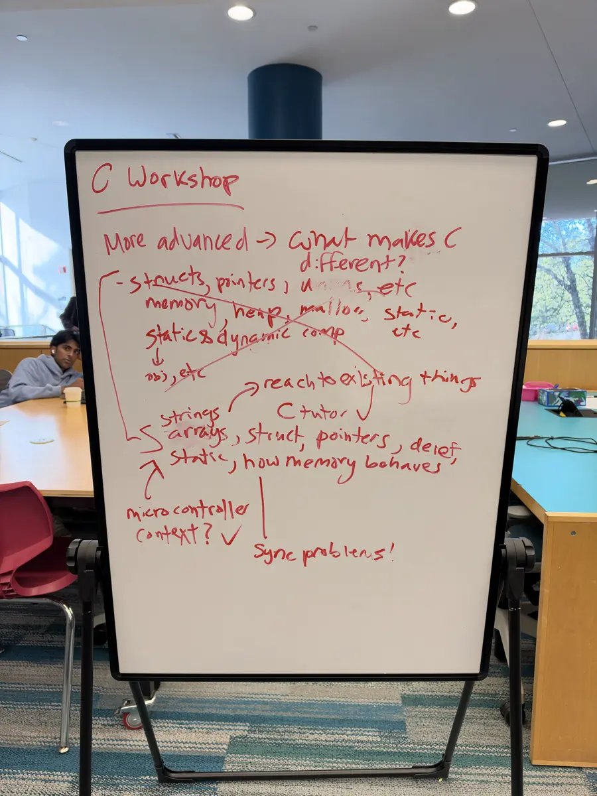
Uma biblioteca de coisas
Num canto do salão tem uma estante com uma placa escrita Library of Things. Dali sai tudo que não é livro. Microfone sem fio, gravador, mala de câmera, binóculo de observar estrela, kit de ferramenta, cabo de qualquer tipo e uma pilha de jogo de tabuleiro. Cada item tem etiqueta e prazo, igual a um empréstimo normal.
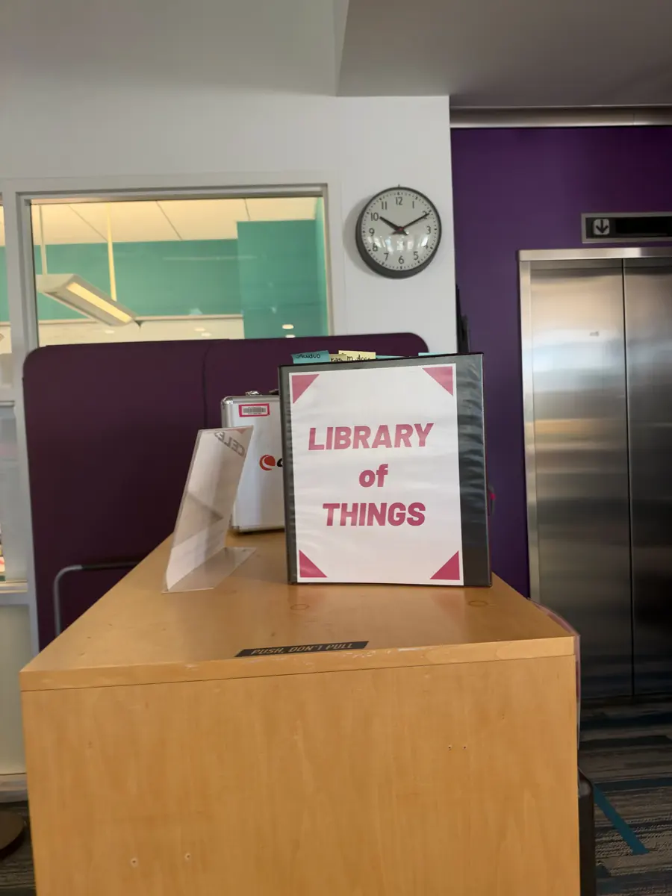
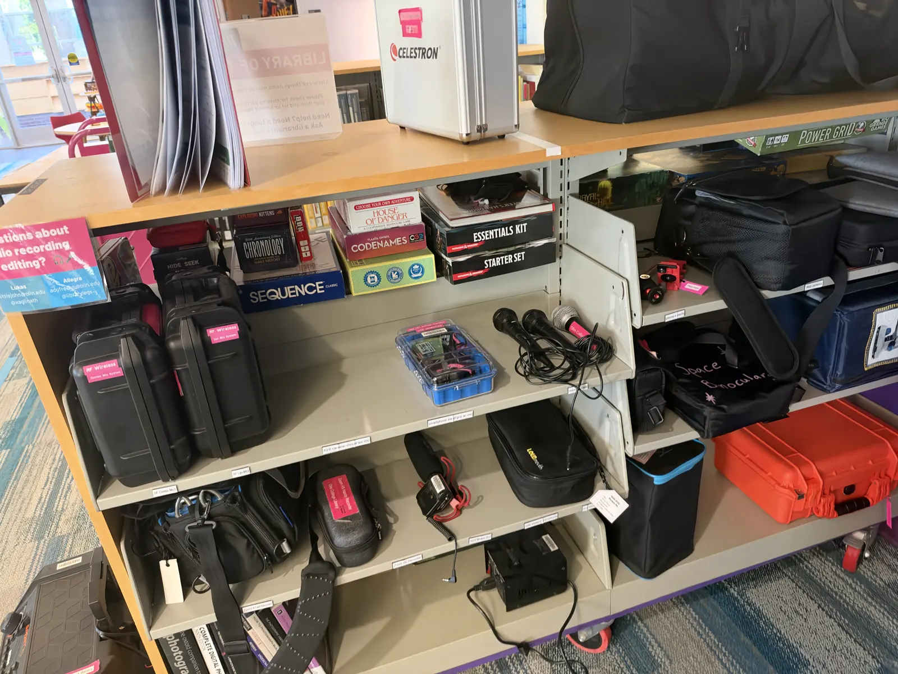
O efeito prático é que ninguém precisa comprar equipamento para experimentar uma ideia. O aluno que decidiu gravar um podcast na terça pega o microfone emprestado e descobre na quarta se gosta daquilo. O custo de tentar cai para perto de zero, e é esse custo que normalmente mata projeto de estudante.
A biblioteca também abriga máquina de criação. Costura, serigrafia, estúdio de gravação e impressão 3D ficam no mesmo prédio dos livros, num espaço maker compartilhado e aberto.
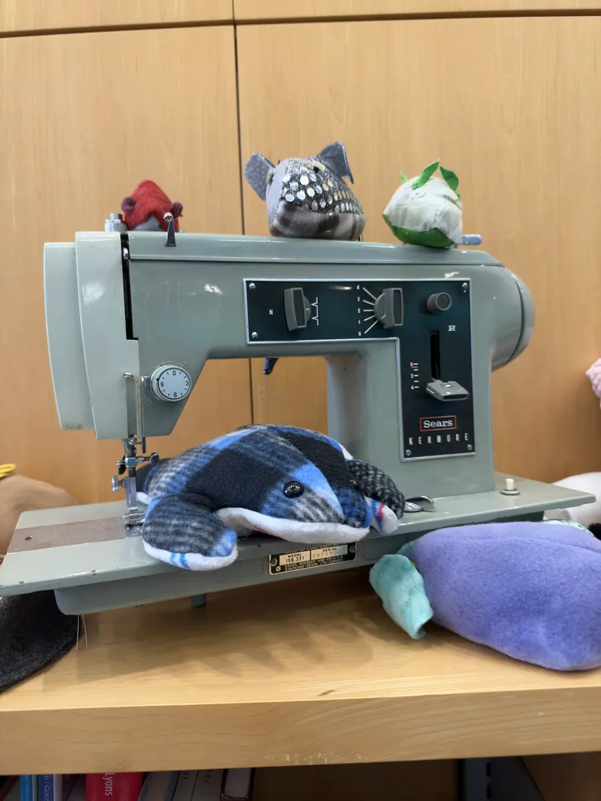
A oficina é governada pelos alunos
A oficina principal se chama The Shop. Logo na entrada tem um mural de crachás, um por aluno habilitado. Cada cartão traz a foto, o ano de formatura, a lista de máquinas que aquela pessoa pode treinar, um campo de ask me about e o horário em que ela está por lá. Quem quer usar a impressora de resina, a cortadora a laser ou a máquina de solda procura o nome na parede e fala com a pessoa.
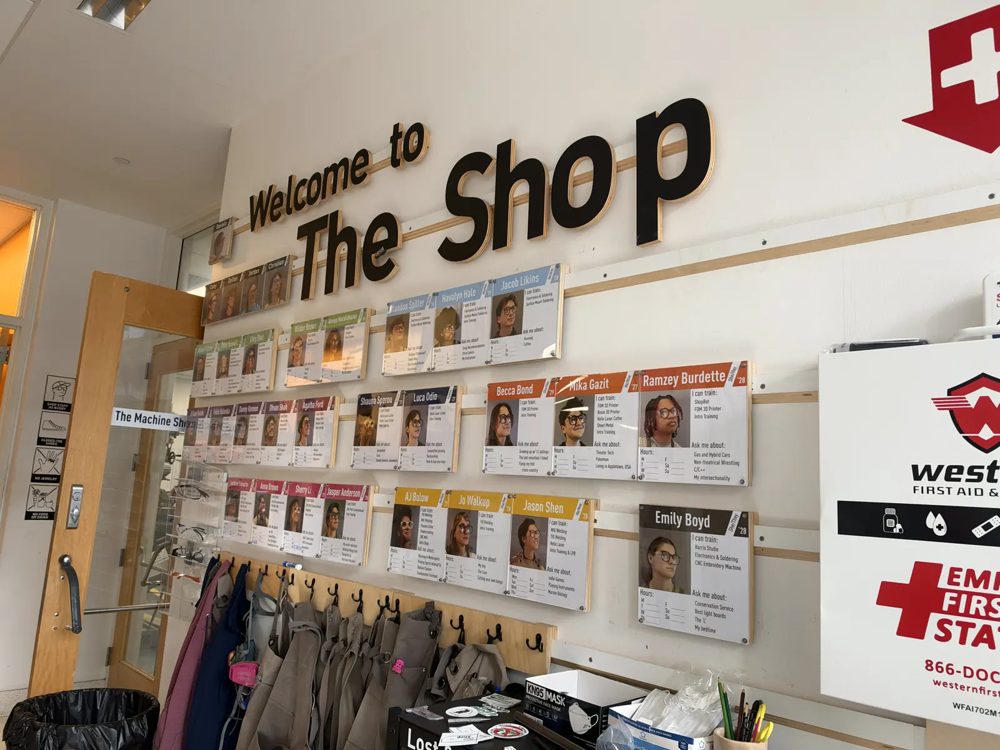
Isso é uma estrutura de governança inteira resolvida com papel plastificado. O conhecimento de operar máquina circula entre alunos, e não depende de um técnico contratado estar disponível. Um veterano treina um calouro, o calouro entra no mural, e dois anos depois ele é quem treina. Foi a coisa mais transferível que eu vi no dia.
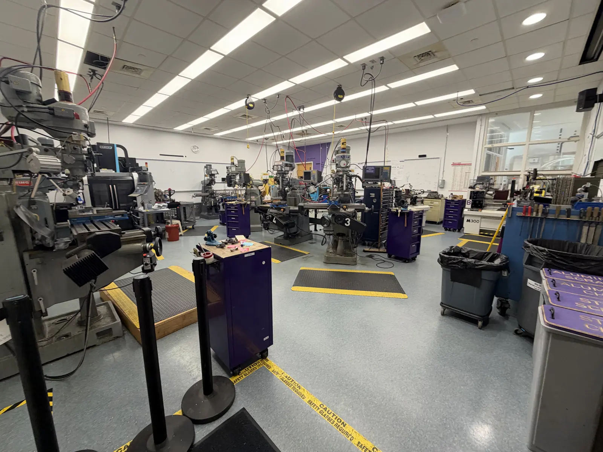
A máquina fica ao lado da mesa
O que mais me chamou atenção na arquitetura foi a ausência de separação entre onde se estuda e onde se constrói. Os corredores têm bancada de trabalho encostada na janela, com ferramenta e peça em cima, no caminho de quem passa. Não existe o ritual de descer até o laboratório.
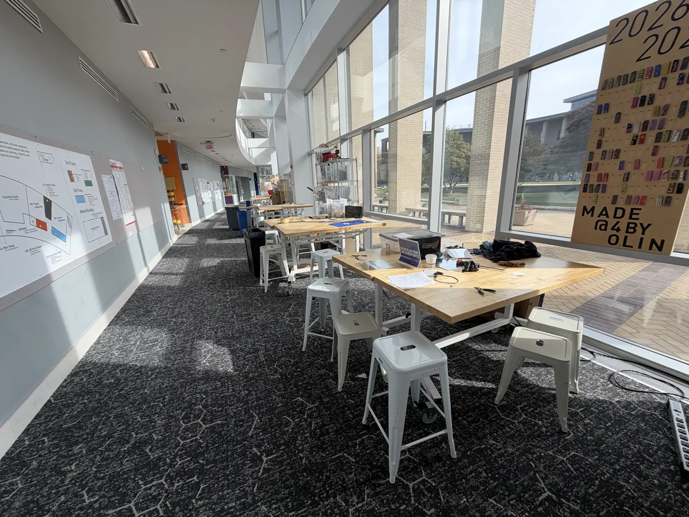
Os laboratórios seguem a mesma ideia e juntam prática e teoria na mesma sala: a bancada de medição fica a dois passos do quadro onde a conta é feita.
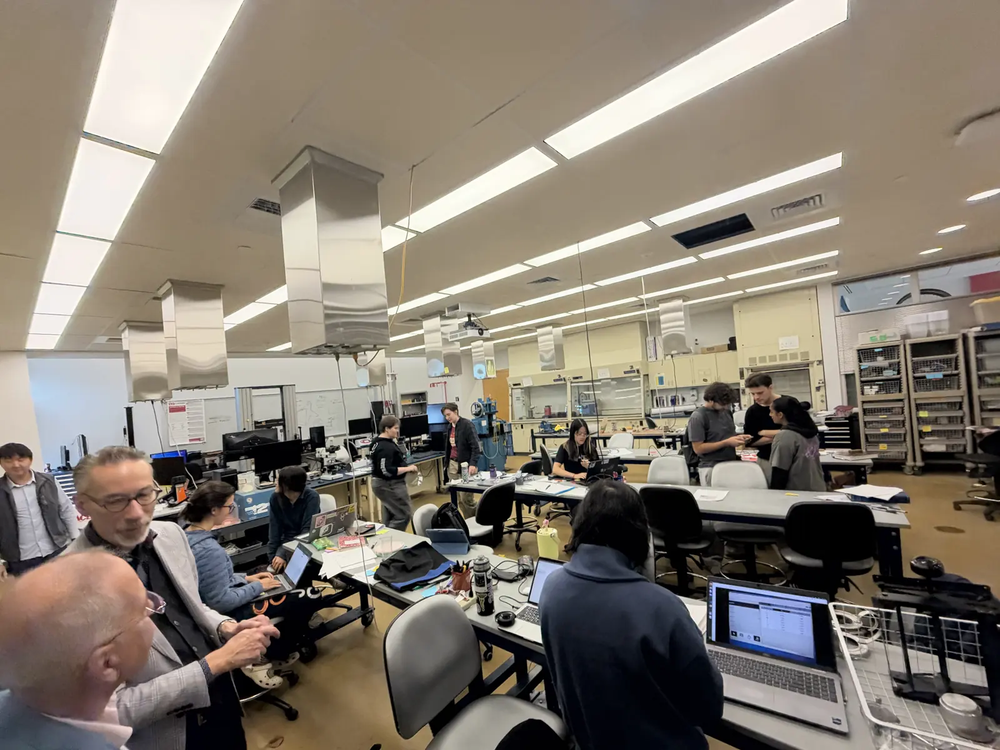
A avaliação acompanha esse formato. Desde o primeiro projeto, o que se mede é o quanto o aluno aprendeu construindo alguma coisa. Nos anos iniciais a nota é pass/fail: ou passa na matéria ou não passa, sem média para perseguir. E as disciplinas não são só de engenharia. Tem design, programação e hardware no mesmo cardápio.
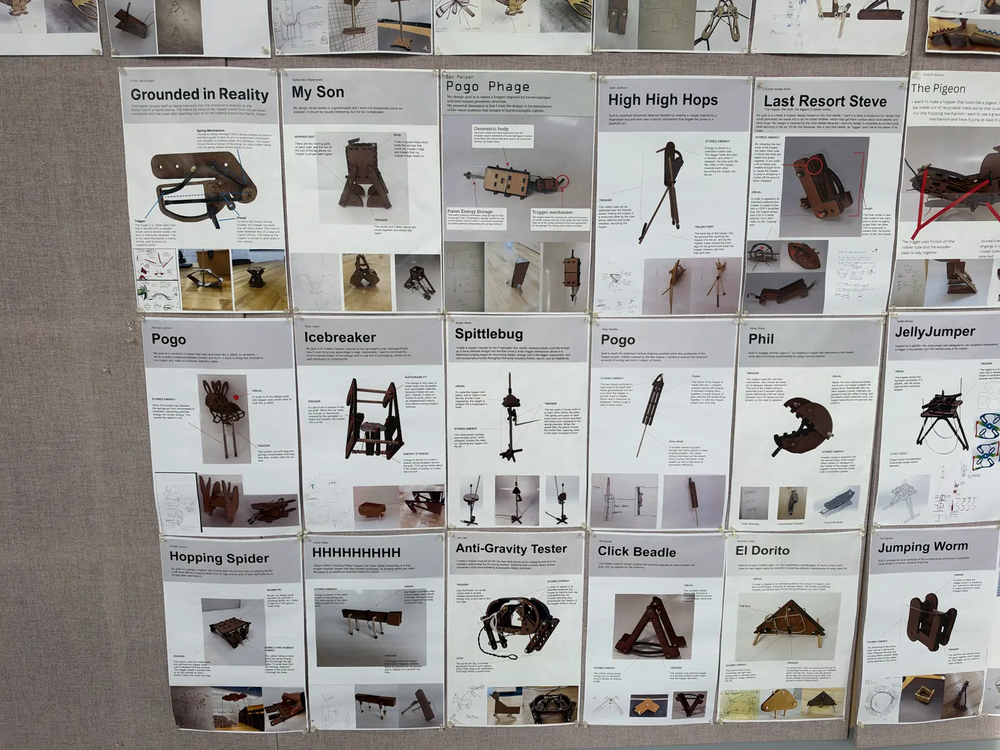
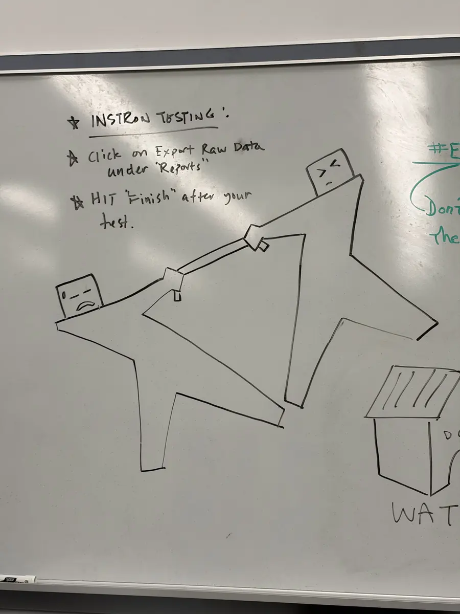
Uma aula sobre IA
Assisti a uma aula chamada Generative AI: Hands-On Exploration of the Tools and the Societal Impacts, do semestre de outono de 2026, de Lis Sylvan e Caitrin Lynch. A ementa mistura as duas coisas que costumam andar separadas: construir com as ferramentas e discutir o efeito delas. Os alunos montam fluxos de trabalho assistidos por IA, escrevem aplicativo, analisam dados e terminam o semestre com um manifesto pessoal sobre o próprio uso de IA. Em paralelo, convidados de fora falam de governança, sustentabilidade, confiança e segurança.
O que me pegou foi o formato dos projetos. Cada um tem um champion, uma pessoa de fora da turma que faz o papel de cliente e tem interesse real no resultado. Não é um enunciado inventado pelo professor: é alguém que vai usar aquilo.
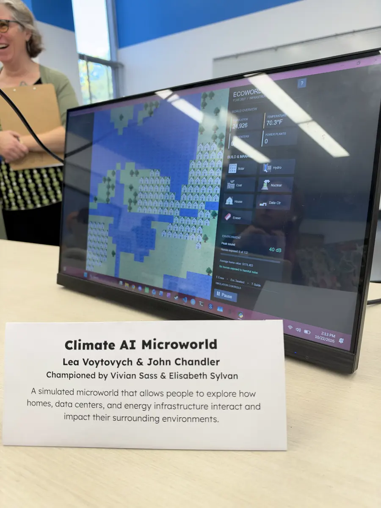
O projeto que eu vi rodando é um simulador de impacto de data center. Você vai colocando casa, solar, hidrelétrica, carvão, nuclear e data center num mapa, e acompanha o que acontece com a população, a temperatura e o ruído em volta. A pergunta que ele responde é concreta: quando a infraestrutura que faz a IA funcionar chega perto de onde as pessoas moram, o que muda para elas.
Morar dentro da escola
Os alunos moram no campus durante a graduação inteira. Calouros e segundanistas dividem quarto de duas pessoas, e o quarto já vem com escrivaninha, frigobar, microondas, armário e banheiro com chuveiro.
Morar junto o tempo todo explica muita coisa do resto. A Jam Room é uma sala com instrumento disponível para quem quiser tocar, e existem vários clubes de música em volta dela. A sala de jogos tinha campeonato de bilhar acontecendo. Nada disso parece atividade organizada pela administração: parece coisa que os alunos montaram porque estão todos ali.
Toda a alimentação acontece no dining hall, num salão só. Com 400 alunos, a escola inteira almoça no mesmo lugar, e dá para atravessar o refeitório reconhecendo as pessoas. É uma comunidade pequena, e isso aparece no tom de tudo.
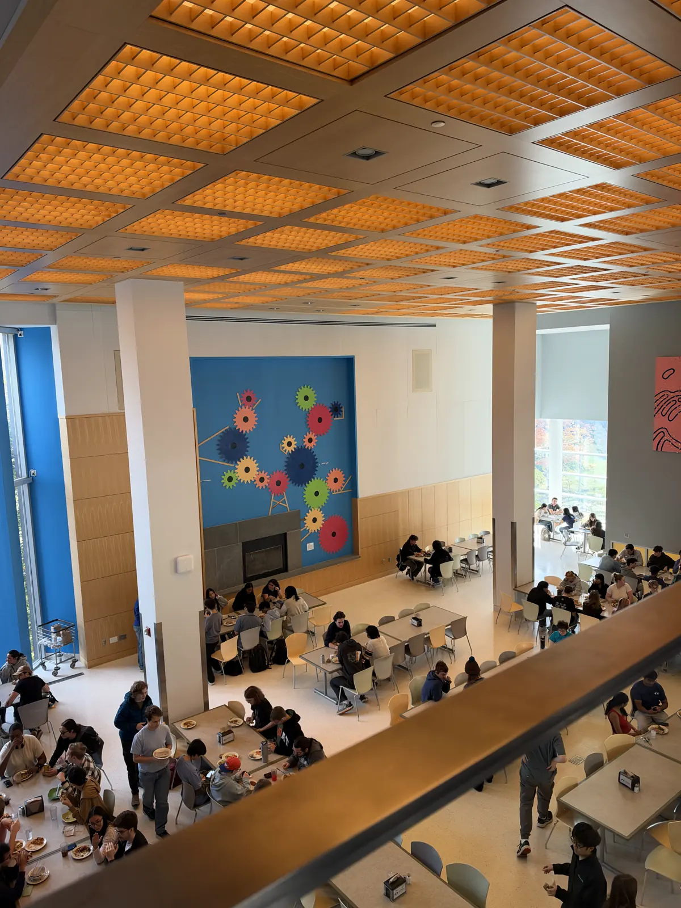
O que eu trouxe de lá
Três coisas ficaram comigo, e nenhuma delas depende de ter o orçamento do Olin.
- Baixar o custo de tentar. A Library of Things não é sobre equipamento caro, é sobre não precisar decidir que você vai levar um hobby a sério antes de experimentar.
- Distribuir a habilitação. O mural de crachás transforma cada aluno treinado em capacidade instalada da escola, e resolve sozinho o gargalo de quem pode liberar a máquina.
- Dar cliente ao projeto. O champion faz o trabalho deixar de ser exercício e vira compromisso com alguém, que é exatamente a diferença que eu sinto entre quem já trabalhou e quem ainda não.
Nenhuma dessas três é uma política de ensino cara. Todas são decisões de organização, e é por isso que eu acho que dá para levar para um minicurso na Satc, para o Startup Weekend e para qualquer lugar onde se forma gente que constrói coisa.
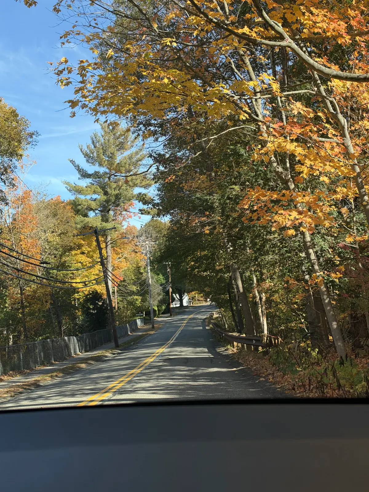